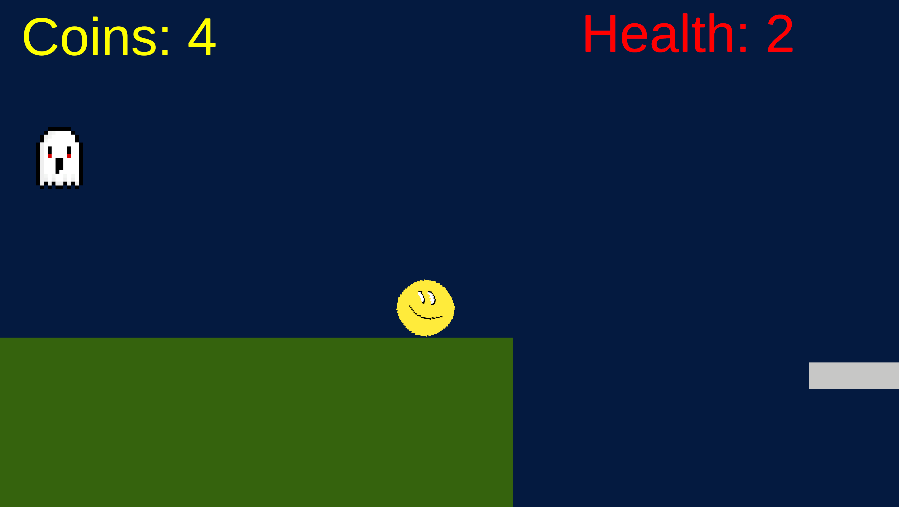
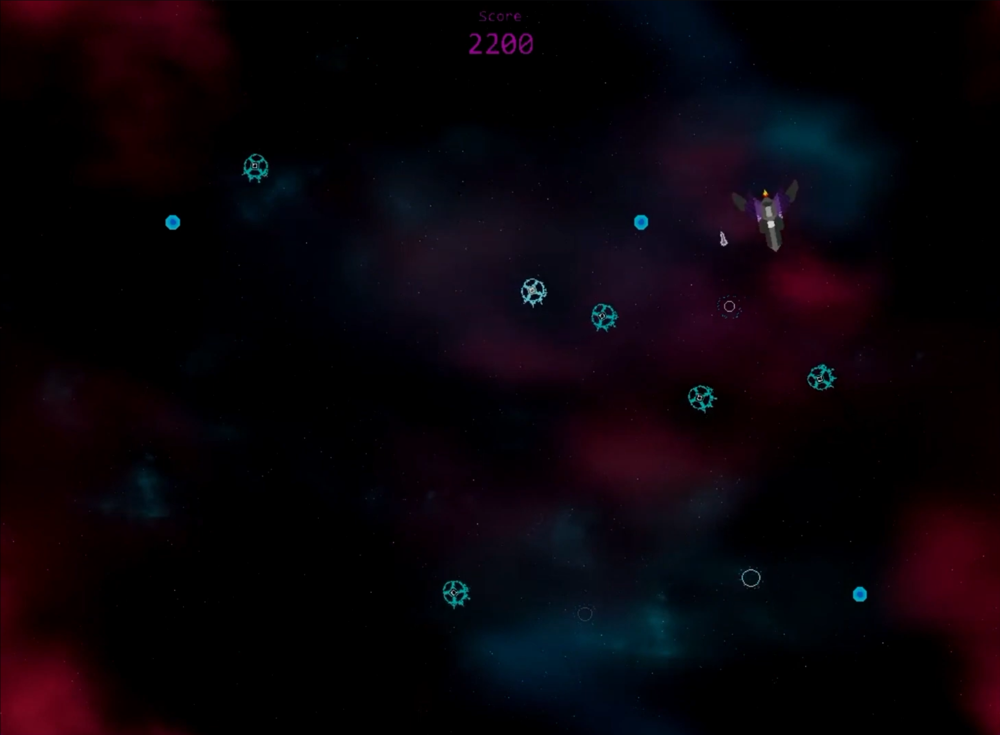
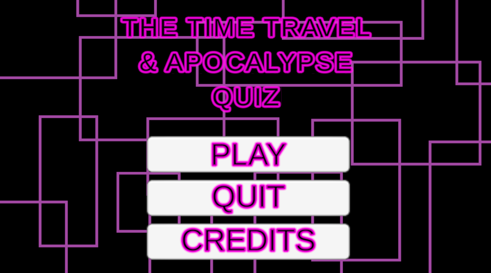

Projects
Project 1 - OOP Platform Game
This project was developed as part of my object oriented programming studies and is available to download through Itch.io. The game was created as a 2D platformer and was designed to demonstrate a range of programming concepts and gameplay mechanics and throughout development I implemented multiple levels, enemy behaviours, moving platforms, timed disappearing platforms, checkpoints, a health and lives system and collectible items. Player progress was also carried between levels through a persistent coin collection system. One design choice I was particularly happy with was creating a yellow ball character rather than using a traditional humanoid player character, this helped give the game its own identity while keeping the visual style simple but also memorable and the project strengthened my understanding of object oriented programming principles while also improving my level design, problem solving and gameplay scripting skills.Software Used: Unity and C#
Year: 2025/26
Skills Demonstrated: Object Oriented Programming, Level Design, UI Systems and Collision Detection and Gameplay Programming
View Project on Itch.io

Project 2 - Asteroids Inspired Game
I created this in 2023 during my time at college using GameMaker, the project was inspired by the classic arcade game Asteroids, however I added my own ideas and mechanics to make it feel more unique rather than simply recreating the original game and by that I was able to creat the art work for it, give it my own spin with power ups I needed to code in as well as creating my own lore and background story for the game and all of this helped me understand that game development is not only about programming, but also about creating a world that gives players a reason to stay engaged. The project also served as my introduction to programming since using GameMaker and GameMaker Language (GML) helped me learn important programming concepts such as variables, conditions, objects and game logic in a way that was easy to understand. Looking back, it provided a strong foundation that helped prepare me for later development work using Unity and C# but unlike my other Itch.io project, this game is currently available as a downloadable build rather than a browser-playable experience.
Software Used: GameMaker Studio 2 and GML
Year: 2022/23
View Project on Itch.io

Project 3 - Graded Unit 2 Quiz Game
This project was created as part of my Graded Unit 2 assessment for the SQA during the 2025/26 academic year, achieving an overall grade A. The game was developed in Unity and focused on user interface design, scene management and quiz logic systems but throughout development I created systems to manage questions, scoring and player progression / replayability since I hade two different themes and ensuring the user experience remained clear and intuitive since the project provided valuable experience working with C# scripting, UI development and overall project planning it was also able to help strengthen my problem solving skills by requiring me to design, develop and test a complete playable application within the assessment timeframe. Due to third party assets used during development, the project is not publicly available but, it remains one of the most important projects in my portfolio because it demonstrates my growth as a developer and my ability to successfully complete a large assessment project. One pieace we had to include was a 3D element and the one I choose was a 3D animation of a door swinning open before the game starts, I even used real audio of a door opening to simulate the noise
Software Used: Unity and C#
Year: 2025/26
Grade: A
